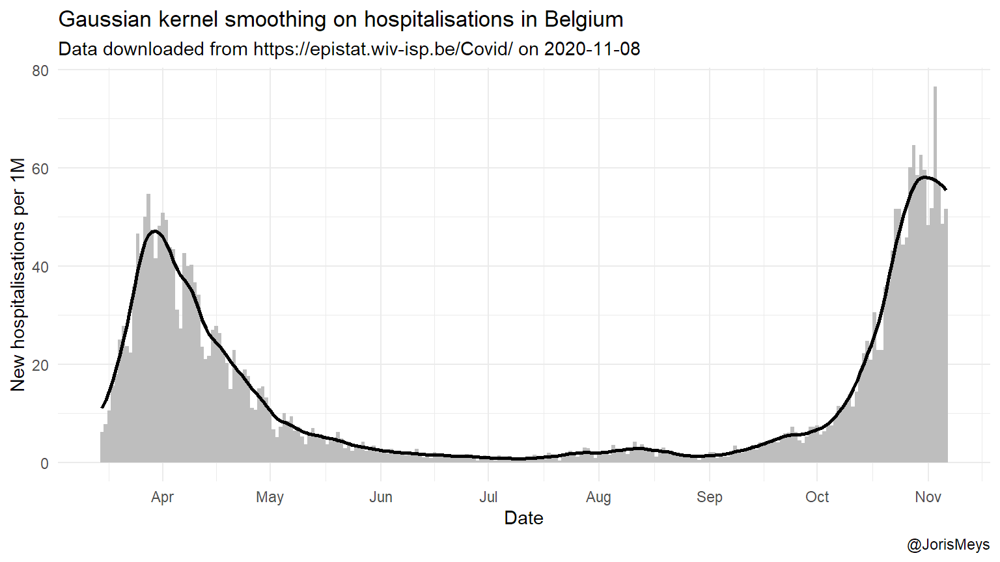
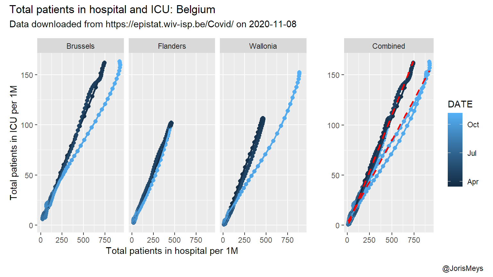
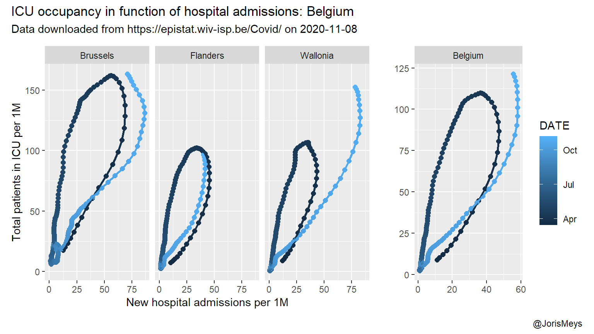
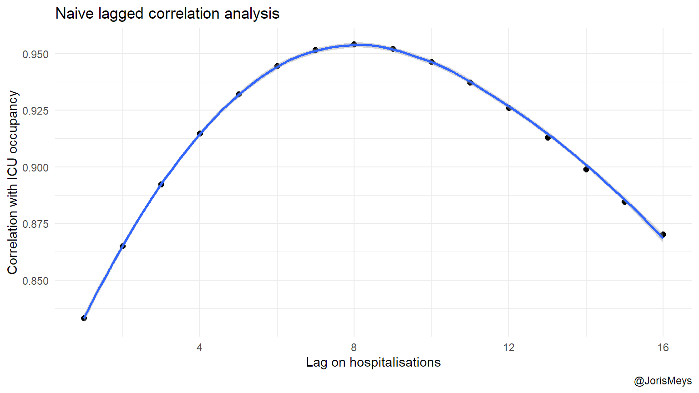
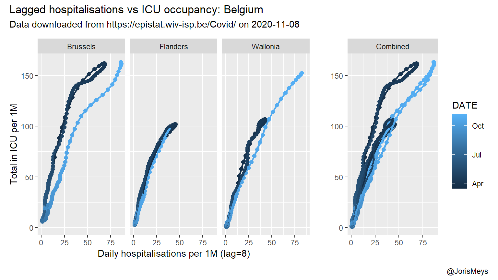

This report reflects the situation on 2020-11-08.
COVID doesn’t always mean you end up in intensive care, but if you do, it takes several days from infection until you’re admitted to hospital and eventually ICU. This means that the effect of measures taken by a government will only be felt in ICU after a certain period of time. So one should be able to get some idea about the situation in ICU some time from now based on the current trends in new cases. As changes in testing strategy have a big impact on the reporting of cases, I use the number of new hospital admissions instead.
# In order to run the code in this report, you first need to
# source("scripts/downloadData.R")
library(ggplot2)
library(dplyr)
library(patchwork)
library(scales)
thefuns <- dir("functions", pattern = "\\.R")
for(i in thefuns){
source(file.path("functions",i))
}
regional <- readRDS(file.path("Processed",
stamp("regionalper1M",".rds"))) %>%
mutate(DATE = as.Date(DATE),
WAVE = ifelse(DATE < "2020-07-01","First wave", "Second wave")) %>%
filter(DATE < Sys.Date() - 1)I will use the data provided by Sciensano for Belgium. In order to get some idea about variability, I look at the regions. To keep the differences in population in mind, I chose to correct for population size.
For each of those, I try to look for the peaks, in order to calculate how many days it takes between peaks. But the data poses a few problems. First of all, reporting is lower in the weekend. This could lead to the conclusion that peaks occur simultaneously, which is obviously not the case. To overcome this, I smooth these bumps out using a technique called a Gaussian kernel smoother with a bandwith of 7. The result of this is illustrated in the figure below.
# Smoothing function
normalsmooth <- function(var,date,bw = 7){
res <- ksmooth(date, var,
kernel = "normal",
bandwidth = bw)
res$y
}
regionals <- mutate(regional, DATE = as.Date(DATE)) %>%
group_by(REGION) %>%
mutate(across(where(is.numeric),
~normalsmooth(.x, DATE, bw = 7),
.names = "S_{.col}"))
ggplot(filter(regionals, REGION == "Belgium"),
aes(x = DATE, y = S_NEW_IN)) +
geom_col(aes(y = NEW_IN), width = 1,
fill = "gray") +
geom_line(lwd = 1) +
labs(x = "Date", y = "New hospitalisations per 1M",
title = "Gaussian kernel smoothing on hospitalisations in Belgium",
subtitle = paste("Data downloaded from https://epistat.wiv-isp.be/Covid/ on", Sys.Date()),
caption = "@JorisMeys") +
theme_minimal() +
scale_x_date(date_breaks = "1 months",
date_labels = "%b" )
The relation between the total amount of patients in hospital and in ICU comes as no surprise. Yet, surprisingly there’s no real lag to be found in the data. The relation is strikingly linear and similar between the regions during the first wave. During the second wave, there’s a notable difference in fraction of patients that ends up in ICU in Brussels and Wallonia. This might reflect more stringent criteria used for ICU admission.
p5 <- ggplot(filter(regionals,
!REGION %in% c("Belgium","unknown")),
aes(x = S_TOTAL_IN,
y = S_TOTAL_IN_ICU,
color = DATE,
group = REGION)) +
geom_point(size = 2) +
geom_path(lwd = 1) +
labs(y = "", x = "")
p6 <- p5 + facet_wrap(vars(REGION),
nrow = 1) +
labs(y = "Total patients in ICU per 1M",
x = "Total patients in hospital per 1M")
p6 +
p5 + geom_smooth(mapping = aes(group = WAVE),
method = "lm", se = FALSE,
color = "red", linetype = 2) +
facet_wrap(vars("Combined")) +
plot_layout(widths = c(3,1),
guides = "collect") +
plot_annotation(title = "Total patients in hospital and ICU: Belgium",
subtitle = paste("Data downloaded from https://epistat.wiv-isp.be/Covid/ on", Sys.Date()),
caption = "@JorisMeys")
In both Brussels and Wallonia the relation changes at a certain point during the second wave. This likely points to a shift in strategy regarding which patients are sent to ICU.
Looking at the number of incoming patients and the total number in ICU, a different relation pops up. During the first wave, the total amount of patients in ICU kept rising for a few days after the number of new admissions started to decline. This is to be expected, as patients spend a considerable amount of time in ICU. So it takes a while for the outflow to catch up with a reduced inflow.
Keep in mind this pattern is to be expected only when looking at a peak. So in the plots below, I focus on the first and second peak.
p7 <- ggplot(filter(regionals,
REGION == c("Belgium")),
aes(x = S_NEW_IN,
y = S_TOTAL_IN_ICU,
color = DATE)) +
geom_point(size = 2) +
geom_path(lwd = 1) +
labs(y = "", x = "")
p8 <- ggplot(filter(regionals,
!REGION %in% c("Belgium","unknown")),
aes(x = S_NEW_IN,
y = S_TOTAL_IN_ICU,
color = DATE,
group = REGION)) +
geom_point(size = 2) +
geom_path(lwd = 1) +
labs(y = "", x = "") + facet_wrap(vars(REGION),
nrow = 1) +
labs(y = "Total patients in ICU per 1M",
x = "New hospital admissions per 1M")
p8 +
p7 +
facet_wrap(vars("Belgium")) +
plot_layout(widths = c(3,1),
guides = "collect") +
plot_annotation(title = "ICU occupancy in function of hospital admissions: Belgium",
subtitle = paste("Data downloaded from https://epistat.wiv-isp.be/Covid/ on", Sys.Date()),
caption = "@JorisMeys")
In order to find the lag between the peak in new admissions and peak load in ICU, I look at how far the real number of ICU patients lie from a curve fitted through those numbers in function of the number of new admissions \(x\) days earlier. As the second peak only begin to emerge, I use the data of the first peak to estimate this delay. I also look at the different regions rather than the numbers of Belgium as a whole, as a proxy for possible variation in this lag.
cors <- numeric(16)
tmp <- filter(regionals,
!REGION %in% c("Belgium","unknown"),
DATE < as.Date("2020-07-01")) %>%
select(S_NEW_IN, S_TOTAL_IN_ICU, REGION)
for(i in seq.int(16)){
tmp2 <- mutate(group_by(tmp,REGION),
S_NEW_IN = lag(S_NEW_IN,i))
cors[i] <- with(tmp2,
cor(S_NEW_IN, S_TOTAL_IN_ICU, use = "complete.obs"))
}
bestlag <- which.max(cors)
ggplot(data.frame(lag = 1:16, cors),
aes(x = lag, y = cors)) +
geom_point(size = 2)+
geom_smooth() +
labs(x = "Lag on hospitalisations",
y = "Correlation with ICU occupancy",
title = "Naive lagged correlation analysis",
caption = "@JorisMeys") +
theme_minimal()
Using an optimal lag of 8 days, the loops from the previous plots transform into almost straight lines.
tmp <- filter(regionals,
!REGION %in% c("unknown", "Belgium")) %>%
group_by(REGION) %>%
mutate(S_NEW_IN = lag(S_NEW_IN, bestlag)) %>%
ungroup()
p9 <- ggplot(tmp,
aes(x = S_NEW_IN,
y = S_TOTAL_IN_ICU,
group = REGION)) +
geom_point(aes(color = DATE),size = 2) +
geom_path(aes(color = DATE),lwd = 1) +
labs(y = "", x = "")
p10 <- p9 + facet_wrap(vars(REGION),
nrow = 1) +
labs(y = "Total in ICU per 1M",
x = paste0("Daily hospitalisations per 1M (lag=",bestlag,")"))
p10 +
p9 +
facet_wrap(vars("Combined")) +
plot_layout(widths = c(3,1),
guides = "collect") +
plot_annotation(title = "Lagged hospitalisations vs ICU occupancy: Belgium",
subtitle = paste("Data downloaded from https://epistat.wiv-isp.be/Covid/ on", Sys.Date()),
caption = "@JorisMeys")
Again, this relation in itself doesn’t really mean anything. There’s strong dependencies between the different observations, and you can’t predict the number of patients in ICU simply based on the number of new hospital admissions 8 days earlier. But the graph confirms that in this pandemic, in Belgium and during a wave, the number of patients in ICU starts to drop about 8 days after the number of new admissions start to drop.
So when you see the number of daily new hospital admissions start to drop, now you know that :
disclaimer: Please note that while I chose to split up over regions, the regions at hand are tricky to compare. After all, Brussels is an urban, densily populated area with a considerably smaller population than the other regions.